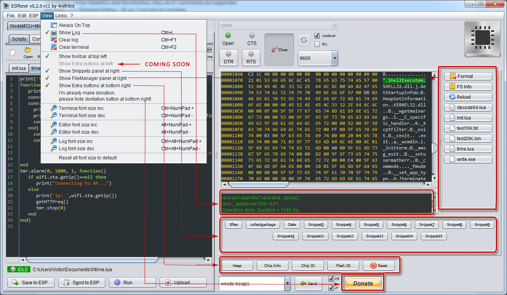

esp8266 - Сообщество разработчиков
Перейти к содержимому
ГЛАВНАЯ ФОРУМ ЗАГРУЗКИ ДОКУМЕНТАЦИЯ ESPLORER О САЙТЕ
ESPlorer

ESPlorer — Интегрированная среда разработки (IDE) для разработчиков ESP8266.
Описание пакета
Необходимые мультиплатформенные инструменты для любого разработчика ESP8266 от автора luatool, включая LUA для NodeMCU и MicroPython. Также поддерживаются команды AT.
Требуется установленная JAVA (версия SE 7 и выше).
Поддерживаемые платформы
Windows (x86, x86-64)
Linux (x86, x86-64, ARM soft & hard float)
Solaris (x86, x86-64)
Mac OS X (x86, x86-64, PPC, PPC64)
Подробный список функций
- Подсветка синтаксиса кода LUA и Python
- Цветовые темы редактора кода: по умолчанию, темная, Eclipse, IDEA, Visual Studio
- Функции редакторов «Отменить/Повторить»
- Автозаполнение кода (Ctrl+Пробел)
- Умная отправка данных на ESP8266 (без «тупой» отправки с фиксированной задержкой строки), проверка правильности ответа от ESP8266 после каждой строки.
- Фрагменты кода
- Подробная регистрация
- и еще, еще, еще…
Учебники по прошивке NodeMCU
Начало работы с ESPlorer IDE Автор: Руи Сантос (скачать бесплатно)
Домашняя автоматизация с использованием ESP8266 Автор: Руи Сантос
Учебники по прошивке MicroPython
Еще нет
Рекомендованное разработчиком ESPlorer оборудование для продвинутых пользователей
Рекомендованное разработчиком ESPlorer оборудование для самого быстрого запуска
- NodeMCU v3 — бренд LoLin, совместим с MicroPython (Aliexpress, сортировка: по цене)
- NodeMCU shields, совместимые с MicroPython — бренд LoLin (Aliexpress, сортировка: по цене)
- Witty board, совместима с MicroPython, RGB LED, датчик освещенности, 3 кнопки (Aliexpress, сортировка: по цене)
- Мини-платы и шилды WeMos, совместимые с Micropython, (Aliexpress, сортировка: по цене)
- Мини-плата и шилды WeMos, совместимые с MicroPython, из официального магазина WeMos Electronic на AliExpress
- Самые популярные детали для самостоятельной сборки (Aliexpres, сортировать по порядку)
Загрузки ESPlorer
Загрузить двоичные файлы ESPlorer
Загрузите исходный код ESPlorer с GitHub
Пожертвование
Для пожертвований с помощью кредитной/дебетовой карты, электронного кошелька или интернет-банкинга (в некоторых странах) нажмите кнопку «Пожертвование PayPal».
Сообщения об ошибках и обсуждение
esp8266.com на английском
esp8266.com на английском
esp8266.ru на русском
Журнал изменений
В настоящее время в процессе разработки — поддержка MicroPython.
0.2.0-rc5
rsyntaxtextarea обновлен с 2.5.6 до 2.5.8
0.2.0-rc4
Микрочип RN2483 (модуль маломощного приемопередатчика LoRa с большим радиусом действия) с поддержкой
0.2.0-rc3
- Автоматическое определение прошивки MicroPython
- Подсветка синтаксиса MicroPython
- Добавлены расширения файлов MicroPython *.py и *.pyc
- Команда MicroPython SendToESP (отправить текущий файл из окна редактора в ESP8266, ALT+E)
- Команда MicroPython SendLine (отправка одной строки из окна редактора в ESP8266, ALT+L)
- Команда MicroPython SendBlock (отправить выбранный блок из окна редактора в ESP8266, ALT+B)
- Вкладка «Coomands» в MicroPython: чтение и запись GPIO, соединения WiFi и TCP)
- Фрагменты MicroPython (блоки кода, редактируемые пользователем, кнопки для быстрого выполнения)
- История команд, введенных вручную в MicroPython
- Автозаполнение кода MicroPython CTRL+SPACE
- Показать/скрыть окно редактора для использования в качестве простого цветного терминала
- Показать/скрыть окно терминала для полноэкранного редактирования кода
- Исправление ошибок
0.2.0-rc2
- добавить селектор скина (стандартный java LookAndFeel, зависит от платформы)
- Автоопределение прошивки можно отключить (новая опция на вкладке «Настройки»)
- уменьшен минимальный размер окна для экранов с низким разрешением
v0.2.0-rc1
- добавить новый крутой ESP FileManager. Команды во всплывающем меню: Run, Compile(New!), View(старая Cat), Edit(New!), Download(New!), Rename(New!), Remove (доступные команды зависят от расширения файла)
- добавить функцию «Загрузить файл в ESP с диска» (включая двоичные файлы) в левой нижней панели
- добавить функцию «Загрузить файл из ESP на диск» (включая двоичные файлы) в файловый менеджер
- Список файлов ESP ABC-автосортированный
- добавить новую кнопку FileSystemInfo (новая команда file.fsinfo() начиная с прошивки 20150311 и более поздних версий)
- добавить автоопределение прошивки после открытия последовательного порта
- добавить проверку связи с MCU после открытия последовательного порта или «изменение скорости на лету»
- изменение размера окна по умолчанию на 1024×768 и новая концепция пользовательского интерфейса
- изменить: во всех кнопках/командах «Run» на «Do», «View» на «Cat»
- расширенное поле для имени последовательного порта
- добавьте «CustomSerialPort» на вкладку «Настройки» (если включить эту функцию, PortScan никогда не будет запущен)
- добавить кнопки DTR и RTS со светодиодом
- добавить светодиод CTS
- добавить новое меню «Ссылки»
- добавить правую панель, специфичную для NodeMCU (кнопка Heap, кнопка Chip Info, кнопка Chip ID, кнопка Flash ID)
- добавить панель инструментов Показать/Скрыть команду в меню «Вид»
- увеличить размер кнопок панели инструментов
- добавить панель «Фрагменты» Показать/Скрыть команду в меню «Вид»
- добавить панель FileManager, команду Показать/Скрыть в меню «Вид»
- добавить Правая панель дополнительных кнопок Показать/Скрыть команду в меню «Вид»
- добавить опцию «Использовать внешний редактор» на вкладке «Настройки». Все файлы ReadOnly
- добавить опцию «EOL» — EOL виден в окне терминала
- добавить новый режим для фрагментов: сжатое выполнение (пожалуйста, не используйте этот режим, если вы используете команды без левого операнда: «=node.heap()», но «x=node.heap» работает нормально)
- исправить ошибку автозаполнения (Ctrl+Пробел) для команд, содержащих «.»
- исправлена ошибка «Включение/выключение окна журнала настроек автосохранения/автовосстановления»
- исправить ошибку: выход из приложения без сохранения файлов
- отключить настройку «Автозапуск файла после сохранения в ESP» (для этого можно использовать новую кнопку «Сохранить и запустить» в версии 2.0.0-final)
- все настройки автоматически сохраняются при изменении и автоматически восстанавливаются после запуска приложения
- Автоматическое сохранение размера окна при закрытии и автоматическое восстановление после запуска приложения
- редактор: размер табуляции изменен с 5 до 4
- библиотека rsyntaxtextarea обновлена до версии 2.5.6
- некоторый рефакторинг кода
- улучшить стабильность
- теперь концепция управления версиями semver.org (MAJOR.MINOR.PATCH)
v0.1 сборка 206
- добавить file.format из NodeMCU 20150107
- Очистка AutoMagic CMD-History от Майка (DL2ZAP)
- добавить несколько команд в выпадающий список команд
v0.1 сборка 205
- ESPlorer — теперь с открытым исходным кодом !
- добавить функцию «TurboMode». Мои тесты: Размер файла: 3300 байт, 100 строк, скорость передачи данных: 115200, Время загрузки: 1,8 сек.
- В окне терминала также есть синтаксисhilighter (как редактор)
- Теперь совместимо с Java 7 и 8
v0.1 сборка 204
- добавлена функция «AutoReConnect»: после открытия порта на 9600 вы можете легко изменить скорость порта на другую скорость передачи данных без запуска фрагмента
- добавить новые настройки: максимальный размер журнала и максимальный размер истории терминала для исправления ошибки «все становится ужасно медленным»
- переставить кнопки фрагментов, добавить кнопку «Отменить редактирование фрагмента»
- добавить горячую клавишу для фрагментов: для фрагмента 0 — Alt+BackQuote, фрагмента 1 — Alt+1, фрагмента 9 — Alt+9, фрагмента 10 — Alt+0, фрагмента 11 — Alt+Minus, фрагмента 12 — Alt+Equals, фрагмента 13 — Alt+BackSlash, фрагмента 14 — Alt+BackSpace, фрагмента 15 — горячей клавиши нет.
v0.1 сборка 203
- добавить включение/выключение автопрокрутки
- добавить новые скорости передачи данных последовательного порта: 230400, 460800, 921600
v0.1 сборка 202
- добавить команды «Увеличение/уменьшение размера шрифта» для окон редактора, терминала и журнала
- удалить все действия автоочистки терминала
- исправление ошибки (сохранение настроек)
v0.1 сборка 201
- добавлен «Dumb Mode» для отправки данных в старом стиле с задержкой линии (см. вкладку «Настройки»)
- добавить функцию фрагментов кода
- добавить команду «Отправить текущую строку в ESP»
- настройки, последний использованный последовательный порт и скорость, последняя папка скриптов автосохранение/автозагрузка сейчас
- горячие клавиши пересмотрены
v0.1 сборка 200
- исправление ошибок
- добавить историю команд
v0.1 начальная публичная версия